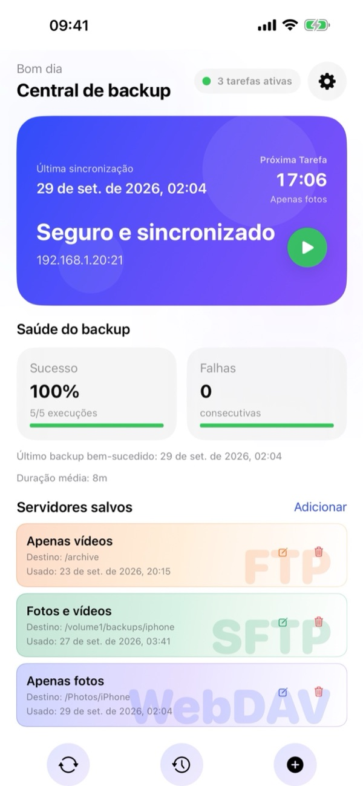
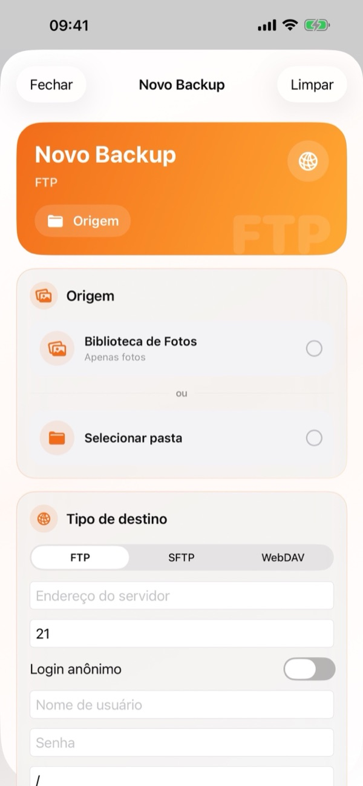
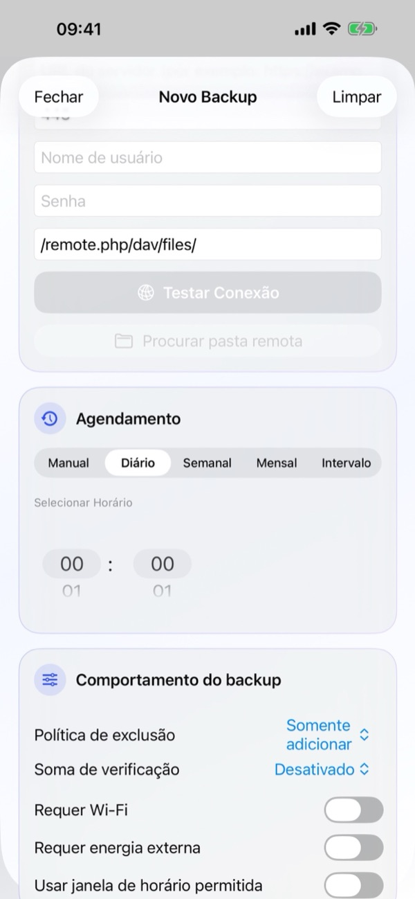
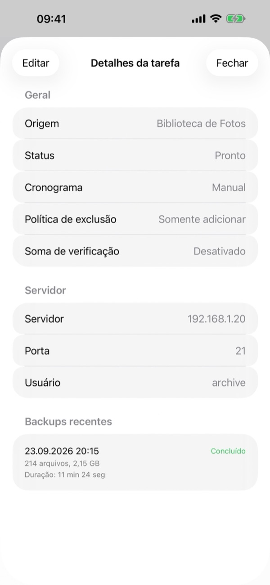
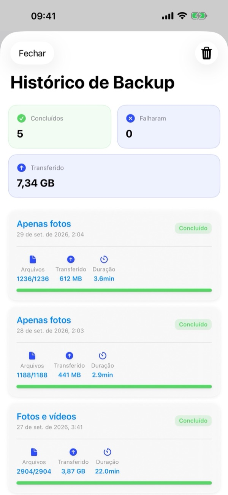
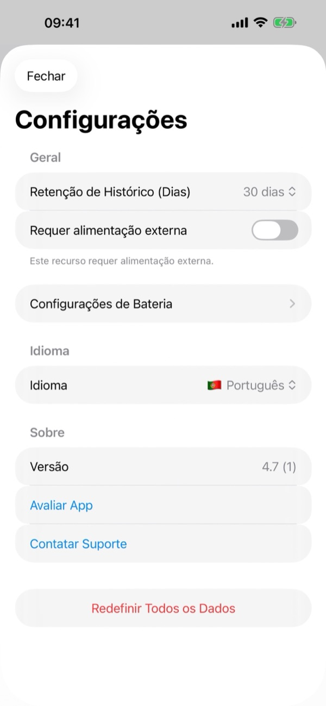

1. Do que você precisa
- Um servidor compatível: Qualquer NAS (Synology, QNAP, TrueNAS, Unraid), servidor doméstico ou nuvem pessoal (Nextcloud, ownCloud, WebDAV) compatível com FTP, SFTP (SSH) ou WebDAV (HTTP/HTTPS).
- Dados de acesso: Endereço do servidor, porta (FTP 21, SFTP 22, WebDAV 443/80), Nome de usuário e Senha (ou login anônimo para FTP).
- Permissões do iOS: Acesso total a Fotos, permissão de Rede Local (para servidores domésticos) e Notificações.
2. Visão geral da Central de backup
Ao abrir o BackupFlow, a Central de backup mostra o status completo do seu sistema em tempo real:
- Cartão de status: Mostra a última sincronização, o horário da próxima tarefa, o status de proteção, o endereço do servidor e o botão verde Reproduzir (▶) para iniciar um backup imediatamente.
- Saúde do backup: Exibe a taxa de sucesso, falhas consecutivas, data do último backup bem-sucedido e duração média.
- Servidores salvos: Cartões para suas tarefas FTP, SFTP e WebDAV com atalhos para Editar (✏️) e Excluir (🗑️). Toque em qualquer cartão para abrir os Detalhes da Tarefa.
- Barra inferior e Configurações: Use os três botões inferiores para Sincronizar (🔄), abrir o Histórico de Backup (🕒) ou criar um Novo Backup (+). O ícone de engrenagem (⚙️) no canto superior direito abre as Configurações.

3. Criar um Novo Backup
Toque no botão + na barra inferior da Central de backup (ou em Adicionar ao lado de Servidores salvos) para abrir a tela Novo Backup:
- Origem: Escolha Biblioteca de Fotos (somente fotos, somente vídeos ou ambos) ou toque em Selecionar pasta para escolher qualquer pasta do app Arquivos do iOS.
- Tipo de destino: Selecione FTP, SFTP ou WebDAV. Informe o endereço do servidor, a porta, o Nome de usuário, a Senha e o caminho remoto (ex.:
/remote.php/dav/files/). Toque em Testar Conexão e, se desejar, em Procurar pasta remota para escolher a pasta no servidor. - Agendamento: Escolha Manual, Diário, Semanal, Mensal ou Intervalo e defina o horário em Selecionar Horário.
- Comportamento do backup: Configure a Política de exclusão, a Soma de verificação e as condições de execução, e salve a tarefa.
Após o primeiro backup completo, apenas arquivos novos ou alterados são enviados, tornando os backups seguintes muito mais rápidos.


4. Detalhes e gerenciamento da tarefa
Toque em qualquer tarefa em Servidores salvos para abrir os Detalhes da Tarefa:
- Geral: Veja a origem, o status atual, o agendamento, a Política de exclusão e a Soma de verificação.
- Servidor: Confira o endereço do servidor, a porta e o usuário.
- Backups recentes: Veja as últimas execuções dessa tarefa com data, status, quantidade de arquivos, tamanho e duração.
- Toque em Editar no canto superior esquerdo para alterar qualquer configuração.

5. Agendamento e condições
Em Agendamento, escolha entre Manual, Diário, Semanal, Mensal ou Intervalo, definindo o horário em Selecionar Horário.
Em Comportamento do backup, defina quando o backup automático pode rodar:
- Requer Wi-Fi: Nunca utiliza dados móveis.
- Requer energia externa: Executa apenas enquanto o iPhone está carregando.
- Usar janela de horário permitida: Restringe backups automáticos a um horário específico (por exemplo, durante a noite).
- Nível Mínimo da Bateria (em Configurações › Configurações de Bateria): Pula o backup se a bateria estiver baixa.
6. Política de exclusão, Soma de verificação e iCloud
Em Comportamento do backup, você controla o que acontece no servidor quando apaga arquivos no iPhone e a verificação de integridade:
- Política de exclusão › Somente adicionar
- Nada é apagado do servidor. Recomendado se você pretende apagar fotos/vídeos do iPhone após o backup para liberar espaço.
- Política de exclusão › Espelhar
- Mantém a pasta do servidor como cópia exata da origem. Arquivos apagados no iPhone também são removidos do servidor.
- Política de exclusão › Excluir arquivando
- Arquivos removidos no iPhone são movidos para uma pasta datada .backupflow_archive no servidor em vez de serem apagados.
- Soma de verificação (Checksum)
- Verifica se cada arquivo chegou intacto ao servidor após o envio (padrão Desativado para velocidade máxima).
Dica para Fotos do iCloud: Ative Baixar itens do iCloud se necessário para fazer backup também das fotos e vídeos originais armazenados apenas no iCloud.
7. Backup em segundo plano
O BackupFlow usa o BGTaskScheduler do iOS para executar backups agendados em segundo plano. Como o iOS gerencia o momento exato de execução conforme a bateria e o uso do aparelho, a tarefa pode iniciar alguns minutos após o horário agendado ou enviar uma notificação.
Se o iOS pausar um backup, basta abrir o BackupFlow para continuar de onde parou, pulando os arquivos já enviados. Para o primeiro backup grande, mantenha o iPhone no Wi-Fi e conectado ao carregador.
8. Histórico de Backup
Toque no botão central Histórico (🕒) na barra inferior da Central de backup:
- Cartões de resumo: Veja o total de backups concluídos, falhas e o volume total transferido (GB/MB).
- Registros detalhados: Cada item mostra o nome da tarefa, data/hora, status, total de arquivos, tamanho e duração. Use o ícone de lixeira (🗑️) no canto superior direito para limpar o histórico.

9. Configurações do aplicativo
Toque no ícone de engrenagem (⚙️) no canto superior direito da Central de backup para abrir as Configurações:
- Retenção de Histórico (Dias): Escolha por quantos dias o histórico é mantido (ex.: 30 dias).
- Requer Energia Externa e Configurações de Bateria: Regras globais de carregamento e bateria mínima.
- Idioma: Altere o idioma do aplicativo instantaneamente entre os 12 idiomas suportados.
- Sobre: Veja a Versão, toque em Avaliar App ou em Contatar Suporte.
- Redefinir Todos os Dados: Remove todas as tarefas, histórico e senhas salvas deste iPhone sem afetar os arquivos nos seus servidores.

10. Solução de problemas
- Não consigo conectar ao meu servidor.
- Verifique endereço, porta (FTP 21, SFTP 22, WebDAV 443/80), usuário e senha. Em servidores domésticos, confirme que o iPhone está no mesmo Wi-Fi e que a permissão está ativa em Ajustes do iPhone › Privacidade e Segurança › Rede Local › BackupFlow.
- Um backup agendado não rodou.
- Verifique as condições em Comportamento do backup (Wi-Fi, energia, janela de horário, bateria) e as notificações do app.
- Algumas fotos estão faltando.
- Permita acesso total às Fotos e ative Baixar itens do iCloud se necessário.
- Arquivos sumiram do servidor.
- Altere a Política de exclusão da tarefa de Espelhar para Somente adicionar ou Excluir arquivando.
- Aviso de segurança SFTP.
- A impressão digital SSH do servidor mudou. Isso é esperado se o servidor foi reinstalado ou trocado; caso contrário, consulte o administrador.
11. Privacidade e segurança
Seus arquivos vão diretamente do iPhone para o seu próprio servidor. O BackupFlow não possui servidores intermediários, nunca vê seus arquivos e não coleta dados pessoais ou analíticos. As senhas são criptografadas nas Chaves do iOS (Keychain). Leia nossa Política de Privacidade completa.
12. Precisa de ajuda?
Vá em Configurações › Contatar Suporte no aplicativo (ou envie um e-mail para tamersavasci@icloud.com). A versão do app e o modelo do iPhone são adicionados automaticamente.